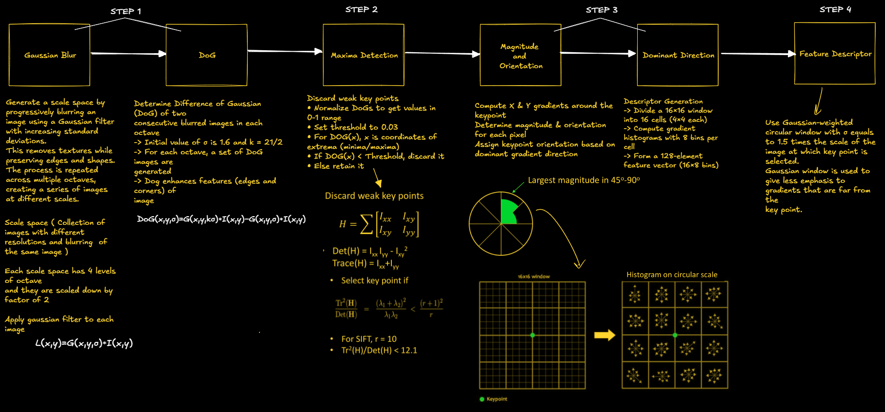
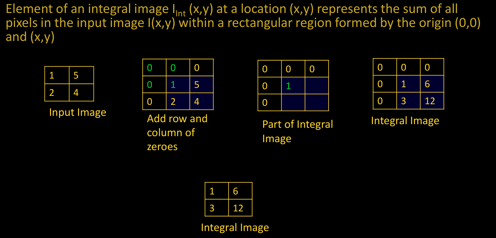
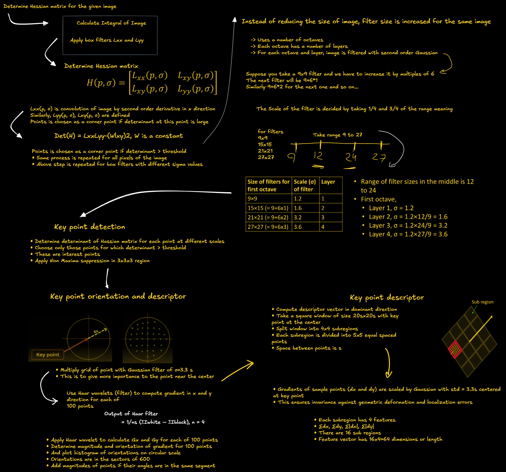

Feature Extraction¶
Unit 2¶
Image Features in Computer Vision¶
🔹 Image features are key elements that help in object recognition, segmentation, and analysis.
Types of Image Features¶
✅ Edges – Identifies boundaries between objects. ✅ Color – Extracts information based on pixel intensity. ✅ Texture – Analyzes surface patterns and structures. ✅ Object Boundaries – Detects outlines and contours of objects. ✅ Object Shape – Defines geometric properties of an object.
🔹 Good Features Should Be: - ✅ Unique & Distinctive – Helps differentiate between objects. - ✅ Non-redundant – Avoids duplicate or unnecessary information. - ✅ Robust – Works well under noise and illumination changes. - ✅ Global Representation – Captures scene-wide characteristics, not just local details.
Gradient-Based Features¶
Gradient-based techniques detect changes in pixel intensity, which highlight object edges and textures.
🔹 Popular Techniques: - DoG (Difference of Gaussian) - LoG (Laplacian of Gaussian) - HoG (Histogram of Oriented Gradients) - SIFT (Scale-Invariant Feature Transform) - SURF (Speeded-Up Robust Features)
📌 Advantages: ✅ Invariant to small shifts & rotations – Ensures stability under transformations. ✅ Localized histograms – Offers better spatial information compared to global histograms. ✅ Contrast normalization – Reduces the impact of variable illumination.
Difference of Gaussian (DoG)¶
📌 A feature enhancement technique used for blob detection & SIFT descriptors.
How DoG Works:¶
1️⃣ Apply Gaussian Blur – Smoothens the image using two Gaussian filters with different sigma values (σ₁ & σ₂). 2️⃣ Subtract the Two Blurred Images – Enhances regions with specific frequency details. 3️⃣ Suppress High-Frequency Details – Reduces random noise but preserves important structures.
🔹 Mathematical Representation: $$ DoG = G_{\sigma_1} * I - G_{\sigma_2} * I $$
where: - \( I \) = Original grayscale image - \( G_{\sigma_1}, G_{\sigma_2} \) = Gaussian filters with different standard deviations
📌 Pros & Cons: ✅ Reduces noise while preserving edges ✅ Enhances spatial features ❌ Reduces overall image contrast
Laplacian of Gaussian (LoG) – Edge Detection & Feature Enhancement¶
🔹 Laplacian of Gaussian (LoG) is a feature detection technique that combines: 1️⃣ Gaussian Smoothing – Reduces noise in the image. 2️⃣ Laplacian Operator – Detects edges and blobs by identifying intensity changes.
How LoG Works:¶
- Apply a Gaussian filter to smooth the image and suppress noise.
- Compute the second derivative (Laplacian) to highlight regions with rapid intensity changes (edges).
- Detect zero-crossings in the Laplacian response to identify edges.
Mathematical Representation:¶
The LoG function is given by: $$ LoG(x, y) = \nabla^2 G_{\sigma} (x, y) * I(x, y) $$ where: - \( G_{\sigma} (x, y) \) = Gaussian filter with standard deviation \( \sigma \) - \( \nabla^2 \) = Laplacian operator (second derivative) - \( I(x, y) \) = Input image
Key Features of LoG:¶
✅ Combines smoothing & edge detection in one step. ✅ Detects both fine and coarse details depending on \( \sigma \). ✅ Useful for blob detection in feature descriptors like SIFT. ❌ Sensitive to noise – Requires pre-smoothing for better results.
🚀 LoG is commonly used in edge detection pipelines like the Marr-Hildreth operator and as a preprocessing step in Computer Vision applications! 🔍
Histogram of Oriented Gradients (HoG) – Feature Descriptor for Object Detection¶
🔹 Histogram of Oriented Gradients (HoG) is a feature descriptor used for object detection and image classification by analyzing gradient orientations in localized regions of an image.
Step-by-Step HoG Computation¶
✅ Step 1: Resize Image - Resize the image to an integer multiple of 8 (nearest to the original size). - Ensures uniform cell division and efficient computation.
✅ Step 2: Divide Image into Cells - Split the image into small patches of equal size (e.g., 8×8 pixels per cell). - Each cell will have its own gradient histogram.
✅ Step 3: Compute Gradients - Calculate the gradient magnitude and orientation using Sobel filters: [ M = \sqrt{G_x^2 + G_y^2}, \quad \theta = \tan^{-1} \left(\frac{G_y}{G_x} \right) ] where \( G_x, G_y \) are gradients along horizontal and vertical directions.
✅ Step 4: Compute Gradient Histograms (Per Cell) - For each 8×8 cell, create a histogram of gradients (e.g., 9 bins for 0°-180°). - Assign gradient magnitudes to their corresponding orientation bins.
✅ Step 5: Construct Feature Vector - Normalize the histograms across neighboring blocks (e.g., 2×2 cells per block) for better illumination invariance. - Flatten the computed HoG features into a single feature vector for classification.
✅ Step 6: Visualize HoG - HoG features are often visualized as a grid of arrows, where the length and direction represent gradient strength and orientation.
✅ Step 7: Classify Images - Use machine learning models (SVM, Deep Learning) to classify objects using the extracted HoG feature vector.
Mathematical Representation:¶
-
Gradient Magnitude (\(M\)): $$ M = \sqrt{G_x^2 + G_y^2} $$
-
Gradient Orientation (\(\theta\)): $$ \theta = \tan^{-1} \left(\frac{G_y}{G_x} \right) $$ where:
- \( G_x, G_y \) = Gradients in horizontal & vertical directions.
- \( M \) = Strength of edge response.
- \( \theta \) = Edge direction (0°–180° or 0°–360° bins).
Key Features of HoG:¶
✅ Invariance to Illumination & Shadows – Normalization removes intensity variations. ✅ Captures Local Shape Information – Focuses on edges and textures rather than pixel intensity. ✅ Robust to Small Translations & Rotations – Uses histograms instead of raw gradients. ✅ Widely Used in Object Detection – Forms the basis of Dalal-Triggs pedestrian detection and is used in SVM-based image recognition. ❌ Computationally Expensive – Requires dense gradient computations across the entire image.
🚀 HoG is widely used in Human & Object Detection (e.g., Pedestrian Detection in self-driving cars) and Machine Learning-based Image Classification! 🔍
Feature Descriptors in Computer Vision¶
🔹 Feature descriptors help identify key points, edges, and corners in an image. 🔹 These descriptors are used for object detection, image matching, and recognition.
Types of Feature Descriptors¶
1. Global Descriptors 🌍¶
- Represent the entire image.
- Examples: ✅ Histogram of Oriented Gradients (HoG) ✅ Difference of Gaussian (DoG) ✅ Histogram of Optical Flow (HOF)
- Limitations: Struggle with occlusions and profile variations since they analyze the whole image.
2. Local Descriptors 🔍¶
- Describe small patches within an image.
- More accurate & robust for object detection, matching, and occlusion handling.
- Examples: ✅ SIFT (Scale-Invariant Feature Transform) ✅ SURF (Speeded-Up Robust Features) ✅ LBP (Local Binary Pattern) ✅ BRISK (Binary Robust Invariant Scalable Keypoints) ✅ MSER (Maximally Stable Extremal Regions) ✅ FREAK (Fast Retina Keypoint)
📌 Local descriptors outperform global ones in real-world applications like facial recognition and object tracking! 🚀
How to Define an Interest Point?¶
🔹 Interest points are key locations (e.g., edges, corners) where features can be extracted.
✅ Repeatability: - A feature should be detected consistently across multiple images, despite geometric & photometric transformations.
✅ Saliency: - Features should be distinct and unique to avoid mismatches.
✅ Compactness: - Fewer features than the number of image pixels should effectively represent the image.
✅ Efficiency: - Fast computation is essential for real-time applications like tracking & detection.
✅ Locality: - Features should occupy a small area and remain robust to clutter & occlusion.
✅ Covariance: - Features should be detectable despite geometric & photometric variations (e.g., rotation, lighting changes).
SIFT Algorithm – Scale-Invariant Feature Transform¶
SIFT is a feature detection algorithm that extracts scale and rotation-invariant keypoints for object recognition, tracking, and image matching.
Step 1: Construct a Scale Space¶
📌 Why? - Real-world objects appear different at various distances (scales). - A feature must be detectable at multiple scales to be useful in recognition.
🔹 How it Works: 1. The original image is repeatedly blurred using a Gaussian filter. 2. Octaves are created by downsampling the image (reducing its size by half). 3. Within each octave, multiple blurred images are generated with increasing sigma values (σ). 4. This scale-space representation ensures features are scale-independent.
🔹 Mathematical Formulation (Gaussian Blur): [ G(x, y, \sigma) = \frac{1}{2\pi\sigma^2} e^{-\frac{x^2 + y^2}{2\sigma^2}} ] where: - \( G(x, y, \sigma) \) = Gaussian function. - \( \sigma \) = Standard deviation (controls blurring). - \( x, y \) = Pixel coordinates.
🔹 Example: - Octave 1: Original image + multiple blurred versions. - Octave 2: Image resized to half and blurred again. - Repeats for multiple octaves (typically 4-5 octaves).
📌 Outcome: - A collection of images at different scales and resolutions.
Step 2: Compute Difference of Gaussian (DoG)¶
📌 Why? - Identifies keypoints by enhancing edges and texture features. - The Gaussian Blur removes noise, and the DoG highlights changes in intensity.
🔹 How it Works: 1. Compute DoG images by subtracting two consecutive Gaussian-blurred images: [ DoG(x, y, \sigma) = G(x, y, k\sigma) - G(x, y, \sigma) ] where \( k \) is a constant (typically \( k = \sqrt{2} \)). 2. This process is repeated across all octaves. 3. The resulting DoG images enhance edges, blobs, and texture details.
📌 Outcome: - A set of DoG images that highlight regions of interest (potential keypoints).
Step 3: Keypoint Localization¶
📌 Why? - Identify stable keypoints while removing weak or false detections.
🔹 How it Works: 1. Each pixel in the DoG images is compared with 26 neighboring pixels (8 in the same image, 9 in the scale above, and 9 in the scale below). 2. If a pixel is the local maximum or minimum, it is marked as a potential keypoint. 3. Low-contrast keypoints are discarded using a threshold (typically 0.03). 4. Edges are removed using the Hessian matrix determinant to avoid unstable keypoints.
🔹 Mathematical Filtering (Hessian Matrix): [ H = \begin{bmatrix} I_{xx} & I_{xy} \ I_{xy} & I_{yy} \end{bmatrix} ] - Compute corner response: [ \frac{(\text{Trace}(H))^2}{\text{Det}(H)} < 12.1 ] If the value is greater than 12.1, the keypoint is rejected.
📌 Outcome: - A set of highly stable, contrast-rich keypoints that can be used for further processing.
Scale-Invariant Feature Transform (SIFT)¶
SIFT is an algorithm used to detect distinct key points or features in an image. These key points are robust to changes in scale, rotation, and affine transformations, making SIFT widely used in object recognition, image stitching, and 3D reconstruction.
Advantages of SIFT Detector¶
Note
SIFT provides a highly distinctive feature descriptor, making it useful for matching objects in large databases.
| Advantage | Description |
|---|---|
| Locality | Features are local and robust to occlusion. Does not require segmentation of objects. |
| Distinctiveness | Features can be matched to a large database of objects. |
| Quantity | Generates many features, even for small objects. |
| Efficiency | Close to real-time performance. |
| Extensibility | Easily extends to various feature types. |

The image above illustrates SIFT algorithm.
Integral Image¶
An integral image is a technique that allows for the fast computation of the sum of pixel values over a rectangular region.
Key Properties¶
- Speeds up sum calculations for box-type filters.
- Reduces computational cost for large-scale image processing.
Mathematical Representation¶
For an input image \( I(x,y) \), the integral image \( I_{Int}(x,y) \) at a location \( (x,y) \) is computed as:

Use of Integral Image¶
The sum of all pixel values in a region can be quickly computed using four values:
where: - \( A, B, C, \) and \( D \) are elements of the integral image at the corners of the selected region.
Note
Even if size of filter increases, number of computations (3 additions/subtractions) does not increase
Comparison of SIFT and SURF¶
| Feature | SIFT (Scale-Invariant Feature Transform) | SURF (Speeded-Up Robust Features) |
|---|---|---|
| Dimensionality | High-dimensional feature descriptor | Lower dimensional, more compact descriptor |
| Accuracy | Reduction in dimensionality decreases accuracy | More efficient without significant accuracy loss |
| Keypoint Detection | Approximates Laplacian of Gaussian (LoG) using Difference of Gaussian (DoG) | Approximates LoG using Box Filters |
| Computation | Uses determinant and trace of the Hessian matrix | Uses only determinant of Hessian matrix |
| Speed | Computationally expensive | Faster due to integral images and parallel convolution |
| Real-Time Applications | Not optimized for real-time processing | Suitable for real-time tracking & object recognition |
Tip
SURF is a faster alternative to SIFT, making it suitable for real-time applications while maintaining robustness.
Speeded-Up Robust Features (SURF) Algorithm¶
1. Detector¶
- Construct Hessian matrix using box filters at each pixel to determine keypoints.
- Increase the size of box filters and repeat step 1.
- For each keypoint, select points within a radius of 6σ (where σ is the standard deviation of the keypoint's filter).
- Apply a Gaussian filter of 2.5σ on the keypoint.
- Use a Haar wavelet of size 4σ to determine the magnitude and direction of points.
- Draw a histogram with 6 bins to identify the orientation of the keypoint.
2. Descriptor¶
- Around each keypoint, select a square region of size (20σ × 20σ).
- Divide the region into 16 sub-regions.
- For each sub-region, determine a vector of length 4.
- The final descriptor vector has a total length of 64.
Tip
SURF is significantly faster than SIFT due to its use of box filters and integral images, making it suitable for real-time applications.
Speeded Up Robust Features (SURF) algorithm¶

Applications of Feature Descriptors¶
Feature descriptors are powerful tools in computer vision for identifying and describing local features in images. They enable a wide range of applications:
- Image Matching
- Matches keypoints between different images of the same scene or object.
- Essential for applications like panorama stitching, where multiple images are combined into a wide-angle view.
- Object Recognition
- Identifies and locates objects within images by matching features between a known object and a scene.
- Widely used in robotics and automated inspection systems.
- 3D Reconstruction
- Matches images taken from different viewpoints to reconstruct 3D models of objects or environments.
- Essential for applications in augmented reality (AR) and virtual reality (VR).
- Image Retrieval
- Enables content-based image retrieval by searching for and retrieving images based on visual content rather than metadata.
- Scene Recognition
- Analyzes the spatial arrangement of features to recognize and categorize scenes or environments.
- Useful in autonomous navigation and contextual AI systems.
- Robotic Vision
- Helps robots navigate, identify objects, and interact with their environment more effectively.
- Video Tracking
- Tracks objects or people in video sequences by matching keypoints frame-to-frame.
- Important for surveillance and motion analysis.
- Forgery Detection
- Used in digital forensics to detect tampered or forged images by identifying inconsistencies in local features.
2D Gabor Filter – Parameters & Properties¶
Overview¶
The Gabor filter is a powerful tool used for feature extraction, especially in texture and edge detection. It is a bandpass filter that operates in both the spatial and frequency domains, mimicking the way the human visual system perceives textures.
Key Characteristics¶
✅ Localized in both space & frequency – Helps capture patterns effectively. ✅ Combination of Gaussian & Sinusoidal components – Provides smooth feature extraction. ✅ Mimics human vision – Recognizes textures similar to human eyes.
Mathematical Representation¶
A 2D Gabor filter is defined as:
where: - \( x' = x \cos\theta + y \sin\theta \) - \( y' = -x \sin\theta + y \cos\theta \)
Core Parameters of Gabor Filter¶
| Parameter | Symbol | Description |
|---|---|---|
| Wavelength | \( \lambda \) | Controls the width of the stripes in the Gabor function. |
| Orientation | \( \theta \) | Defines the angle of the normal to the parallel stripes of the Gabor function. |
| Phase Offset | \( \psi \) | Determines the position of the sinusoidal function, affecting edge detection. |
| Standard Deviation | \( \sigma \) | Defines the spread of the Gaussian envelope, controlling the extent of localization. |
| Aspect Ratio | \( \gamma \) | Specifies the ellipticity of the Gabor function's support. |
| Bandwidth | \( B \) | Controls the range of spatial frequencies covered by the filter. |
How Parameters Affect the Gabor Filter¶
1️⃣ Wavelength (λ) – Stripe Width¶
- Controls the width of the sinusoidal pattern.
- Larger λ → Wider stripes → Detects coarse textures.
- Smaller λ → Narrower stripes → Detects fine textures.
2️⃣ Orientation (θ) – Direction of Features¶
- Determines the angle at which the filter responds best to edges.
- Example: A horizontal edge detector has \( \theta = 90^\circ \).
3️⃣ Phase Offset (ψ) – Sinusoidal Shift¶
- \( \psi = 0 \) → Cosine Gabor (Even filter) → Detects bar-like structures.
- \( \psi = \frac{\pi}{2} \) → Sine Gabor (Odd filter) → Detects line-like structures.
4️⃣ Standard Deviation (σ) – Gaussian Spread¶
- Determines the size of the receptive field.
- Large \( \sigma \) → More blurred edges.
- Small \( \sigma \) → More sharp edges.
5️⃣ Aspect Ratio (γ) – Ellipticity¶
- Specifies the shape of the filter.
- Larger \( \gamma \) → More elongated filter (stretches in one direction).
- Smaller \( \gamma \) → More circular response.
Gray Level Co-occurrence Matrix (GLCM) – Texture Analysis¶
Overview¶
The Gray Level Co-occurrence Matrix (GLCM) is a powerful statistical method used in image processing and computer vision to analyze texture features by examining the spatial relationships between pixel intensities.
🔹 Key Applications: ✅ Texture Analysis – Identifies patterns in images. ✅ Feature Extraction – Helps in classification tasks. ✅ Medical Imaging – Detects abnormalities in scans. ✅ Remote Sensing – Analyzes satellite imagery.
GLCM – How It Works¶
GLCM computes how often pairs of gray-level intensities occur at a specific spatial relationship (distance & direction) within an image. This helps extract meaningful texture features.
Statistical Features Derived from GLCM¶
| Feature | Formula | Description |
|---|---|---|
| Contrast | \( \sum_{i,j} (i - j)^2 p(i, j) \) | Measures intensity variation (higher contrast = more difference in pixel values). |
| Dissimilarity | ( \sum_{i,j} | i - j |
| Energy | \( \sum_{i,j} p(i, j)^2 \) | Sum of squared elements → Measures uniformity. |
| Homogeneity | ( \sum_{i,j} \frac{p(i, j)}{1 + | i - j |
| Entropy | \( \sum_{i,j} -p(i, j) \log_2(p(i, j)) \) | Measures randomness → Higher entropy = more complex textures. |
| Correlation | \( \sum_{i,j} \frac{(i - \mu_i)(j - \mu_j) p(i, j)}{\sigma_i \sigma_j} \) | Measures linear dependency between pixel intensities. |
GLCM Mean & Variance¶
-
GLCM Mean: Represents the average occurrence of a pixel intensity based on spatial relationships. $$ \mu_i = \sum_{i,j} i p(i, j), \quad \mu_j = \sum_{i,j} j p(i, j) $$
-
GLCM Variance: Measures spread (dispersion) of pixel intensities around the mean. $$ \sigma_i^2 = \sum_{i,j} p(i, j)(i - \mu_i )^2, \quad \sigma_j^2 = \sum_{i,j} p(i, j)(j - \mu_j )^2 $$